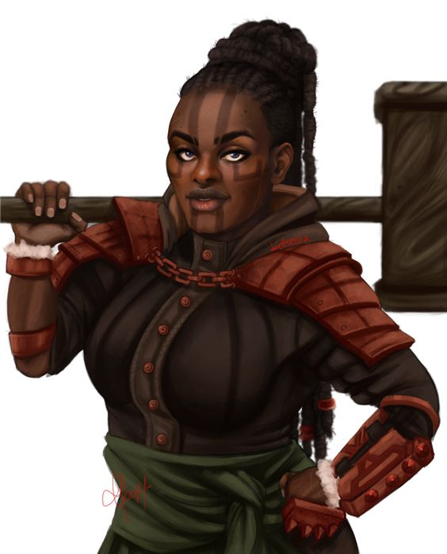
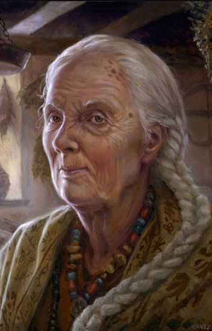
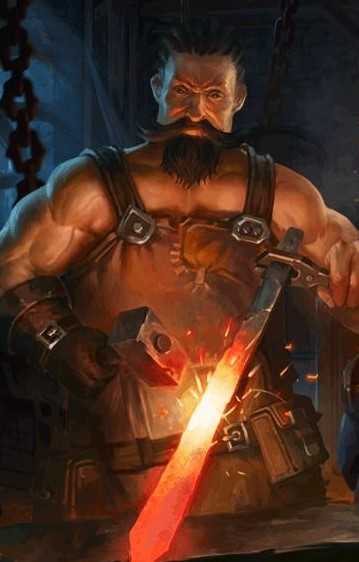

Personagens conhecidos em Minas Ambar

Duriwynn Kodobold, a Valente
General dos Minotauros de Core
Raça: Anã
Localização: Céu, Minas Ambar
Descrição:
Nascida e criada em Minas Ambar, Duriwynn é extremamente corajosa e justa. Ganhou a alcunha de 'Valente' após ser a única a se opor ao seu antigo comandante (posteriormente conhecido como Marco, o Injusto) quando este quis impor uma lei que condenava a morte qualquer um que ofendesse um Minotauro. Duriwynn resolveu a questão em um julgamento por combate que lhe garantiu a posição de General até os dias atuais.

Madame Ajah
Vendedora de Poções
Raça: Humana
Localização: Centro, Minas Ambar
Descrição: A ranzinza Madame Ajah assumiu a casa de poções e medicamentos Pouso do Druída após o falecimento de seu marido. Desde então os moradores relatam que é praticamente IMPOSSÍVEL negociar com ela, já que só aceita PRATAS NA MESA.

Ganan
Ferreiro
Raça: Humano
Localização: Centro, Minas Ambar
Descrição: Apesar de não ter nascido em Minas Ambar, Ganan é figura conhecida naquela cidade. Suas armas e armaduras são de tão boa qualidade, que frequentemente viajantes veêm até Minas Ambar só para negociar com ele. É também um dos humanos mais devotos ao deus Ferreiro.